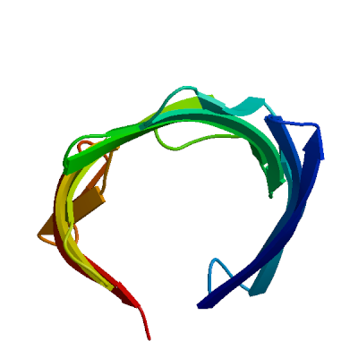
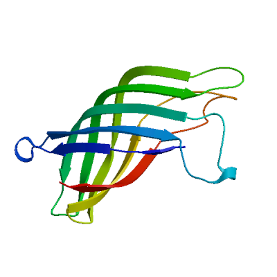

SWISS-MODEL Homology Modelling Report |
Model Building Report
This document lists the results for the homology modelling project "T451DRAFT_2466" submitted to SWISS-MODEL workspace on July 14, 2017, 9:46 p.m..The submitted primary amino acid sequence is given in Table T1.
If you use any results in your research, please cite the relevant publications:
Marco Biasini; Stefan Bienert; Andrew Waterhouse; Konstantin Arnold; Gabriel Studer; Tobias Schmidt; Florian Kiefer; Tiziano Gallo Cassarino; Martino Bertoni; Lorenza Bordoli; Torsten Schwede. (2014). SWISS-MODEL: modelling protein tertiary and quaternary structure using evolutionary information. Nucleic Acids Research (1 July 2014) 42 (W1): W252-W258; doi: 10.1093/nar/gku340.Arnold, K., Bordoli, L., Kopp, J. and Schwede, T. (2006) The SWISS-MODEL workspace: a web-based environment for protein structure homology modelling. Bioinformatics, 22, 195-201.
Benkert, P., Biasini, M. and Schwede, T. (2011) Toward the estimation of the absolute quality of individual protein structure models. Bioinformatics, 27, 343-350
Results
The SWISS-MODEL template library (SMTL version 2017-07-12, PDB release 2017-07-07) was searched with Blast (Altschul et al., 1997) and HHBlits (Remmert, et al., 2011) for evolutionary related structures matching the target sequence in Table T1. For details on the template search, see Materials and Methods. Overall 84 templates were found (Table T2).
Models
The following models were built (see Materials and Methods "Model Building"):
Model #01 | File | Built with | Oligo-State | Ligands | GMQE | QMEAN |
|---|---|---|---|---|---|---|
|  | PDB | ProMod3 Version 1.0.2. | MONOMER | None | 0.16 | -4.81 |
|
| Template | Seq Identity | Oligo-state | Found by | Method | Resolution | Seq Similarity | Range | Coverage | Description |
|---|---|---|---|---|---|---|---|---|---|
| 2wjq.1.A | 13.19 | monomer | HHblits | X-ray | 2.00Å | 0.26 | 213 - 368 | 0.39 | PROBABLE N-ACETYLNEURAMINIC ACID OUTER MEMBRANE CHANNEL PROTEIN NANC |
| Ligand | Added to Model | Description |
|---|---|---|
| CL | ✕ - Not biologically relevant. | CHLORIDE ION |
| CL | ✕ - Not biologically relevant. | CHLORIDE ION |
| LDA | ✕ - Binding site not conserved. | LAURYL DIMETHYLAMINE-N-OXIDE |
| LDA | ✕ - Binding site not conserved. | LAURYL DIMETHYLAMINE-N-OXIDE |
| LDA | ✕ - Binding site not conserved. | LAURYL DIMETHYLAMINE-N-OXIDE |
| LDA | ✕ - Binding site not conserved. | LAURYL DIMETHYLAMINE-N-OXIDE |
| OCT | ✕ - Binding site not conserved. | N-OCTANE |
| OCT | ✕ - Not biologically relevant. | N-OCTANE |
| OCT | ✕ - Binding site not conserved. | N-OCTANE |
| OCT | ✕ - Binding site not conserved. | N-OCTANE |
| OCT | ✕ - Binding site not conserved. | N-OCTANE |
| OCT | ✕ - Binding site not conserved. | N-OCTANE |
| OCT | ✕ - Not biologically relevant. | N-OCTANE |
| OCT | ✕ - Binding site not conserved. | N-OCTANE |
| OCT | ✕ - Not biologically relevant. | N-OCTANE |
Target MMNRRTNLIAALMVLKLSSAWAQEGQAPVDHSHHSVAAKRIRSDVKSREKSATAPAATATDMGAMPGMDHSGMDHSKMNH
2wjq.1.A --------------------------------------------------------------------------------
Target HSMQGMTPSDMTGAAQNSGHDMNHGGATSGKAGDMSGMNHGGGESMSMQGGSAPPDARDPHAYSDGYDFGPIPRPKMGDE
2wjq.1.A --------------------------------------------------------------------------------
Target DNFGSLLVDRLESSTTRGSTAMTYDWQAWYGQTYDRALIRAEGEIESGTFKDARNELLWAHAITAYLDTQLGVRYDSGKG
2wjq.1.A ----------------------------------------------------VQVEVNYAIKLDDQWTVRPGMLTHFSSN
Target TDRGWLAFGIQGLLPYWLYVEATAYVNEQGRTA--------------FRLETEYDLLLTQKL--ILQPRIETNFYSQRD-
2wjq.1.A --GTRYGPYVKL--SWDA--TKDLNFGIRYRYDWKAYRQQDLSGDMSRDNVHRWDGYVTYHINSDFTFAWQTTLYSKQND
Target DTRDVSSGLSNIEAGLRLRYEVRREFAPYVGIEWASRFGSAADNIRAAGKDAEEARLVAGVRLWF
2wjq.1.A YRYA-NHKKWATENAFVLQYHMTPDITPYIEYDYLDRQGVY-----NGRDNLSENSYRIGVSFKL
Model #03 | File | Built with | Oligo-State | Ligands | GMQE | QMEAN |
|---|---|---|---|---|---|---|
| PDB | ProMod3 Version 1.0.2. | MONOMER | None | 0.14 | -5.51 |
|
| Template | Seq Identity | Oligo-state | Found by | Method | Resolution | Seq Similarity | Range | Coverage | Description |
|---|---|---|---|---|---|---|---|---|---|
| 2x9k.1.A | 17.50 | monomer | HHblits | X-ray | 2.18Å | 0.29 | 226 - 368 | 0.33 | OUTER MEMBRANE PROTEIN G |
| Ligand | Added to Model | Description |
|---|---|---|
| BOG | ✕ - Binding site not conserved. | SUGAR (B-OCTYLGLUCOSIDE) |
| BOG | ✕ - Binding site not conserved. | SUGAR (B-OCTYLGLUCOSIDE) |
| BOG | ✕ - Binding site not conserved. | SUGAR (B-OCTYLGLUCOSIDE) |
| BOG | ✕ - Binding site not conserved. | SUGAR (B-OCTYLGLUCOSIDE) |
| BOG | ✕ - Binding site not conserved. | SUGAR (B-OCTYLGLUCOSIDE) |
| BOG | ✕ - Binding site not conserved. | SUGAR (B-OCTYLGLUCOSIDE) |
| BOG | ✕ - Binding site not conserved. | SUGAR (B-OCTYLGLUCOSIDE) |
| BOG | ✕ - Binding site not conserved. | SUGAR (B-OCTYLGLUCOSIDE) |
| BOG | ✕ - Binding site not conserved. | SUGAR (B-OCTYLGLUCOSIDE) |
Target MMNRRTNLIAALMVLKLSSAWAQEGQAPVDHSHHSVAAKRIRSDVKSREKSATAPAATATDMGAMPGMDHSGMDHSKMNH
2x9k.1.A --------------------------------------------------------------------------------
Target HSMQGMTPSDMTGAAQNSGHDMNHGGATSGKAGDMSGMNHGGGESMSMQGGSAPPDARDPHAYSDGYDFGPIPRPKMGDE
2x9k.1.A --------------------------------------------------------------------------------
Target DNFGSLLVDRLESSTTRGSTAMTYDWQAWYGQTYDRALIRAEGEIESGTFKDARNELLWAHAITAYLDTQLGVRYDSGKG
2x9k.1.A -----------------------------------------------------------------RVETETGLQYTFNET
Target TDRGWLAFGIQGLLPYWLY----VEATAYVNEQGRTAFRLETEYDLLLTQKLILQPRIETNFYS-Q-----RDDTRDVSS
2x9k.1.A V---ALRVN------YYLERGFNMDDSRNNGEFSTQEIRAY--LPLTLGN-HSVTPYTRIGLDRWSNWDWQDDIEREGA-
Target GLSNIEAGLRLRYEVRREFAPYVGIEWASRFGSAADNIRAAGKDAEEA-RLVAGVRLWF
2x9k.1.A --DFNRVGLFYGYDFQNGLSVSLEYAFEWQDAD-------EG-DSDKFHYAGVGVNYSF
Model #02 | File | Built with | Oligo-State | Ligands | GMQE | QMEAN |
|---|---|---|---|---|---|---|
|  | PDB | ProMod3 Version 1.0.2. | MONOMER | None | 0.14 | -6.31 |
|  |
| Template | Seq Identity | Oligo-state | Found by | Method | Resolution | Seq Similarity | Range | Coverage | Description |
|---|---|---|---|---|---|---|---|---|---|
| 1g90.1.A | 10.45 | monomer | HHblits | NMR | NA | 0.25 | 184 - 325 | 0.36 | OUTER MEMBRANE PROTEIN A |
Target MMNRRTNLIAALMVLKLSSAWAQEGQAPVDHSHHSVAAKRIRSDVKSREKSATAPAATATDMGAMPGMDHSGMDHSKMNH
1g90.1.A --------------------------------------------------------------------------------
Target HSMQGMTPSDMTGAAQNSGHDMNHGGATSGKAGDMSGMNHGGGESMSMQGGSAPPDARDPHAYSDGYDFGPIPRPKMGDE
1g90.1.A --------------------------------------------------------------------------------
Target DNFGSLLVDRLESSTTRGSTAMTYDWQAWYGQTYDRALIRAEGEIES-GTFKDARNELLWAHAITAYLDTQLGVRYDSGK
1g90.1.A -----------------------LGAGAFGGYQVNPY-VGFEMGYDFLGRMPYKG-S-VENGAY-KAQGVQLTAKLGYPI
Target GTDRGWLAFGIQGLLPYWLYVEATAY-VNEQGRTAFRLETEYDLLLTQKLILQPRIETNFYSQRDDTRDVSSGLSNIEAG
1g90.1.A T--DDLDIYTRLGGMVFRADTKSNVYGKNHDTGVSPVFAGGVEYAITPEIATRLEYQFTNNIGDAH--TIGTRPDNGMLS
Target LRLRYEVRREFAPYVGIEWASRFGSAADNIRAAGKDAEEARLVAGVRLWF
1g90.1.A LGVSYRF-------------------------------------------
Model #04 | File | Built with | Oligo-State | Ligands | GMQE | QMEAN |
|---|---|---|---|---|---|---|
| PDB | ProMod3 Version 1.0.2. | MONOMER | None | 0.14 | -6.74 |
|
| Template | Seq Identity | Oligo-state | Found by | Method | Resolution | Seq Similarity | Range | Coverage | Description |
|---|---|---|---|---|---|---|---|---|---|
| 2jqy.1.A | 18.49 | monomer | HHblits | NMR | NA | 0.29 | 227 - 368 | 0.32 | Outer membrane protein G |
Target MMNRRTNLIAALMVLKLSSAWAQEGQAPVDHSHHSVAAKRIRSDVKSREKSATAPAATATDMGAMPGMDHSGMDHSKMNH
2jqy.1.A --------------------------------------------------------------------------------
Target HSMQGMTPSDMTGAAQNSGHDMNHGGATSGKAGDMSGMNHGGGESMSMQGGSAPPDARDPHAYSDGYDFGPIPRPKMGDE
2jqy.1.A --------------------------------------------------------------------------------
Target DNFGSLLVDRLESSTTRGSTAMTYDWQAWYGQTYDRALIRAEGEIESGTFKDARNELLWAHAITAYLDTQLGVRYDSGKG
2jqy.1.A ------------------------------------------------------------------VETETGLQYTFNET
Target TDRGWLAFGIQGLLPYWLY----VEATAYVNEQGRTAFRLETEYDLLLTQKLILQPRIETNFYS-Q-----RDDTRDVSS
2jqy.1.A V---ALRVN------YYLERGFNMDDSRNNGEFSTQEIRAY--LPLTLGN-HSVTPYTRIGLDRWSNWDWQDDIER---E
Target GLSNIEAGLRLRYEVRREFAPYVGIEWASRFGSAADNIRAAGKDAEEAR-LVAGVRLWF
2jqy.1.A GHDFNRVGLFYGYDFQNGLSVSLEYAFEWQDHD-------EG-DSDKFHYAGVGVNYSF
Model #05 | File | Built with | Oligo-State | Ligands | GMQE | QMEAN |
|---|---|---|---|---|---|---|
| PDB | ProMod3 Version 1.0.2. | MONOMER | None | 0.11 | -6.32 |
|
| Template | Seq Identity | Oligo-state | Found by | Method | Resolution | Seq Similarity | Range | Coverage | Description |
|---|---|---|---|---|---|---|---|---|---|
| 4rlc.1.A | 15.20 | monomer | HHblits | X-ray | 1.60Å | 0.26 | 214 - 368 | 0.34 | Outer membrane porin F |
| Ligand | Added to Model | Description |
|---|---|---|
| C8E | ✕ - Not biologically relevant. | (HYDROXYETHYLOXY)TRI(ETHYLOXY)OCTANE |
| C8E | ✕ - Not biologically relevant. | (HYDROXYETHYLOXY)TRI(ETHYLOXY)OCTANE |
| C8E | ✕ - Not biologically relevant. | (HYDROXYETHYLOXY)TRI(ETHYLOXY)OCTANE |
| C8E | ✕ - Not biologically relevant. | (HYDROXYETHYLOXY)TRI(ETHYLOXY)OCTANE |
| C8E | ✕ - Not biologically relevant. | (HYDROXYETHYLOXY)TRI(ETHYLOXY)OCTANE |
| C8E | ✕ - Not biologically relevant. | (HYDROXYETHYLOXY)TRI(ETHYLOXY)OCTANE |
| C8E | ✕ - Not biologically relevant. | (HYDROXYETHYLOXY)TRI(ETHYLOXY)OCTANE |
Target MMNRRTNLIAALMVLKLSSAWAQEGQAPVDHSHHSVAAKRIRSDVKSREKSATAPAATATDMGAMPGMDHSGMDHSKMNH
4rlc.1.A --------------------------------------------------------------------------------
Target HSMQGMTPSDMTGAAQNSGHDMNHGGATSGKAGDMSGMNHGGGESMSMQGGSAPPDARDPHAYSDGYDFGPIPRPKMGDE
4rlc.1.A --------------------------------------------------------------------------------
Target DNFGSLLVDRLESSTTRGSTAMTYDWQAWYGQTYDRALIRAEGEIESGTFKDARNELLWAHAITAYLDTQLGVRYDS---
4rlc.1.A -----------------------------------------------------LYGGSIGYFLTDDVELALSYGEYHDVR
Target GKGTDRGWLAFGIQGLLPYWLYVEATAYVNEQGRTAFRLETEYDL-LLTQKLILQPRIETNFYSQRDDTRDVSSGLS---
4rlc.1.A GTYET------G--N-----KK------VH---GNLTSLDAIYHFGTPGVG--LRPYVSAGLAHQNITNINSDSQGRQQM
Target -NIEAGLRLRYEVRREFAPYVGIEWASRFGSAADNIRAAGKDAEEARLVAGVRLWF
4rlc.1.A TMANIGAGLKYYFTENFF--AKASLDGQY-GLEK---RDNGHQGEWMAGLGVGFNF
Model #06 | File | Built with | Oligo-State | Ligands | GMQE | QMEAN |
|---|---|---|---|---|---|---|
| PDB | ProMod3 Version 1.0.2. | MONOMER | None | 0.07 | -3.93 |
|
| Template | Seq Identity | Oligo-state | Found by | Method | Resolution | Seq Similarity | Range | Coverage | Description |
|---|---|---|---|---|---|---|---|---|---|
| 4fqe.1.A | 13.89 | monomer | HHblits | X-ray | 1.93Å | 0.28 | 256 - 327 | 0.20 | Oligogalacturonate-specific porin kdgM |
| Ligand | Added to Model | Description |
|---|---|---|
| C8E | ✕ - Not biologically relevant. | (HYDROXYETHYLOXY)TRI(ETHYLOXY)OCTANE |
| C8E | ✕ - Not biologically relevant. | (HYDROXYETHYLOXY)TRI(ETHYLOXY)OCTANE |
| C8E | ✕ - Not biologically relevant. | (HYDROXYETHYLOXY)TRI(ETHYLOXY)OCTANE |
| C8E | ✕ - Not biologically relevant. | (HYDROXYETHYLOXY)TRI(ETHYLOXY)OCTANE |
| C8E | ✕ - Not biologically relevant. | (HYDROXYETHYLOXY)TRI(ETHYLOXY)OCTANE |
| OCT | ✕ - Binding site not conserved. | N-OCTANE |
| OCT | ✕ - Binding site not conserved. | N-OCTANE |
| OCT | ✕ - Not biologically relevant. | N-OCTANE |
Target MMNRRTNLIAALMVLKLSSAWAQEGQAPVDHSHHSVAAKRIRSDVKSREKSATAPAATATDMGAMPGMDHSGMDHSKMNH
4fqe.1.A --------------------------------------------------------------------------------
Target HSMQGMTPSDMTGAAQNSGHDMNHGGATSGKAGDMSGMNHGGGESMSMQGGSAPPDARDPHAYSDGYDFGPIPRPKMGDE
4fqe.1.A --------------------------------------------------------------------------------
Target DNFGSLLVDRLESSTTRGSTAMTYDWQAWYGQTYDRALIRAEGEIESGTFKDARNELLWAHAITAYLDTQLGVRYDSGKG
4fqe.1.A --------------------------------------------------------------------------------
Target TDRGWLAFGIQGLLPYWLYVEATAYVNE-----------QGRTAFRLETEYDLLLTQKLILQPRIETNFYSQRD---DTR
4fqe.1.A ---------------FGLSSEVKWAQSSADKTPNKPFNEQVSNGTEVVASYVYKFNSVFSIEPGFSLESGSSNNNYRPYL
Target DVSSGL-SNIEAGLRLRYEVRREFAPYVGIEWASRFGSAADNIRAAGKDAEEARLVAGVRLWF
4fqe.1.A RGRANVTDDLSVALRYRPYFKR-----------------------------------------
Materials and Methods
Template Search
Template search with Blast and HHBlits has been performed against the SWISS-MODEL template library (SMTL, last update: 2017-07-12, last included PDB release: 2017-07-07).
The target sequence was searched with BLAST (Altschul et al., 1997) against the primary amino acid sequence contained in the SMTL.
An initial HHblits profile has been built using the procedure outlined in (Remmert, et al., 2011), followed by 1 iteration of HHblits against NR20. The obtained profile has then be searched against all profiles of the SMTL. A total of 84 templates were found.
Template Selection
For each identified template, the template's quality has been predicted from features of the target-template alignment. The templates with the highest quality have then been selected for model building.
Model Building
Models are built based on the target-template alignment using ProMod3. Coordinates which are conserved between the target and the template are copied from the template to the model. Insertions and deletions are remodelled using a fragment library. Side chains are then rebuilt. Finally, the geometry of the resulting model is regularized by using a force field. In case loop modelling with ProMod3 fails, an alternative model is built with PROMOD-II (Guex, et al., 1997).
Model Quality Estimation
The global and per-residue model quality has been assessed using the QMEAN scoring function (Benkert, et al., 2011) . For improved performance, weights of the individual QMEAN terms have been trained specifically for SWISS-MODEL.
Ligand Modelling
Ligands present in the template structure are transferred by homology to the model when the following criteria are met (Gallo -Casserino, to be published): (a) The ligands are annotated as biologically relevant in the template library, (b) the ligand is in contact with the model, (c) the ligand is not clashing with the protein, (d) the residues in contact with the ligand are conserved between the target and the template. If any of these four criteria is not satisfied, a certain ligand will not be included in the model. The model summary includes information on why and which ligand has not been included.
Oligomeric State Conservation
Homo-oligomeric structure of the target protein is predicted based on the analysis of pairwise interfaces of the identified template structures. For each relevant interface between polypeptide chains (interfaces with more than 10 residue-residue interactions), the QscoreOligomer (Mariani et al., 2011) is predicted from features such as similarity to target and frequency of observing this interface in the identified templates (Kiefer, Bertoni, Biasini, to be published). The prediction is performed with a random forest regressor using these features as input parameters to predict the probability of conservation for each interface. The QscoreOligomer of the whole complex is then calculated as the weight-averaged QscoreOligomer of the interfaces. The oligomeric state of the target is predicted to be the same as in the template when QscoreOligomer is predicted to be higher or equal to 0.5.
References
Altschul, S.F., Madden, T.L., Schaffer, A.A., Zhang, J., Zhang, Z., Miller, W. and Lipman, D.J. (1997) Gapped BLAST and PSI-BLAST: a new generation of protein database search programs. Nucleic Acids Res, 25, 3389-3402.
Remmert, M., Biegert, A., Hauser, A. and Soding, J. (2012) HHblits: lightning-fast iterative protein sequence searching by HMM-HMM alignment. Nat Methods, 9, 173-175.
Guex, N. and Peitsch, M.C. (1997) SWISS-MODEL and the Swiss-PdbViewer: an environment for comparative protein modeling. Electrophoresis, 18, 2714-2723.
Sali, A. and Blundell, T.L. (1993) Comparative protein modelling by satisfaction of spatial restraints. J Mol Biol, 234, 779-815.
Benkert, P., Biasini, M. and Schwede, T. (2011) Toward the estimation of the absolute quality of individual protein structure models. Bioinformatics, 27, 343-350.
Mariani, V., Kiefer, F., Schmidt, T., Haas, J. and Schwede, T. (2011) Assessment of template based protein structure predictions in CASP9. Proteins, 79 Suppl 10, 37-58.
Table T1:
Primary amino acid sequence for which templates were searched and models were built.
DMNHGGATSGKAGDMSGMNHGGGESMSMQGGSAPPDARDPHAYSDGYDFGPIPRPKMGDEDNFGSLLVDRLESSTTRGSTAMTYDWQAWYGQTYDRALIR
AEGEIESGTFKDARNELLWAHAITAYLDTQLGVRYDSGKGTDRGWLAFGIQGLLPYWLYVEATAYVNEQGRTAFRLETEYDLLLTQKLILQPRIETNFYS
QRDDTRDVSSGLSNIEAGLRLRYEVRREFAPYVGIEWASRFGSAADNIRAAGKDAEEARLVAGVRLWF
Table T2:
| Template | Seq Identity | Oligo-state | Found by | Method | Resolution | Seq Similarity | Coverage | Description |
|---|---|---|---|---|---|---|---|---|
| 2wjq.1.A | 13.19 | monomer | HHblits | X-ray | 2.00Å | 0.26 | 0.39 | PROBABLE N-ACETYLNEURAMINIC ACID OUTER MEMBRANE CHANNEL PROTEIN NANC |
| 2wjr.1.A | 13.38 | monomer | HHblits | X-ray | 1.80Å | 0.27 | 0.39 | PROBABLE N-ACETYLNEURAMINIC ACID OUTER MEMBRANE CHANNEL PROTEIN NANC |
| 3nb3.1.A | 12.77 | hetero-oligomer | HHblits | EM | NA | 0.26 | 0.38 | Outer membrane protein A |
| 4fqe.1.A | 15.44 | monomer | HHblits | X-ray | 1.93Å | 0.28 | 0.37 | Oligogalacturonate-specific porin kdgM |
| 1g90.1.A | 10.45 | monomer | HHblits | NMR | NA | 0.25 | 0.36 | OUTER MEMBRANE PROTEIN A |
| 1qjp.1.A | 8.96 | monomer | HHblits | X-ray | 1.65Å | 0.24 | 0.36 | OUTER MEMBRANE PROTEIN A |
| 4rlc.1.A | 15.20 | monomer | HHblits | X-ray | 1.60Å | 0.26 | 0.34 | Outer membrane porin F |
| 1p4t.1.A | 11.20 | monomer | HHblits | X-ray | 2.55Å | 0.25 | 0.34 | outer membrane protein NspA |
| 2x9k.1.A | 17.50 | monomer | HHblits | X-ray | 2.18Å | 0.29 | 0.33 | OUTER MEMBRANE PROTEIN G |
| 2iwv.1.A | 18.49 | monomer | HHblits | X-ray | 2.30Å | 0.29 | 0.32 | OUTER MEMBRANE PROTEIN G |
| 2iww.1.A | 18.49 | monomer | HHblits | X-ray | 2.70Å | 0.29 | 0.32 | OUTER MEMBRANE PROTEIN G |
| 2jqy.1.A | 18.49 | monomer | HHblits | NMR | NA | 0.29 | 0.32 | Outer membrane protein G |
| 4rl8.1.A | 17.39 | monomer | HHblits | X-ray | 2.30Å | 0.26 | 0.31 | Protein involved in meta-pathway of phenol degradation-like protein |
| 2ge4.1.A | 9.35 | monomer | HHblits | NMR | NA | 0.25 | 0.29 | Outer membrane protein A |
| 1bxw.1.A | 9.26 | monomer | HHblits | X-ray | 2.50Å | 0.24 | 0.29 | PROTEIN (OUTER MEMBRANE PROTEIN A) |
| 2f1c.1.A | 15.84 | monomer | HHblits | X-ray | 2.30Å | 0.28 | 0.27 | Outer membrane protein G |
| 4ctd.1.A | 15.79 | homo-dimer | HHblits | X-ray | 3.20Å | 0.28 | 0.26 | OUTER MEMBRANE PROTEIN G |
| 2k0l.1.A | 11.96 | monomer | HHblits | NMR | NA | 0.25 | 0.25 | Outer membrane protein A |
| 1xkh.1.A | 9.57 | monomer | HHblits | X-ray | 3.60Å | 0.23 | 0.26 | Ferripyoverdine receptor |
| 1p4t.1.A | 15.91 | monomer | HHblits | X-ray | 2.55Å | 0.28 | 0.24 | outer membrane protein NspA |
| 3qq2.1.A | 17.65 | homo-dimer | HHblits | X-ray | 3.00Å | 0.28 | 0.23 | BrkA autotransporter |
| 3qq2.2.B | 17.65 | homo-dimer | HHblits | X-ray | 3.00Å | 0.28 | 0.23 | BrkA autotransporter |
| 3qq2.1.A | 24.00 | homo-dimer | HHblits | X-ray | 3.00Å | 0.31 | 0.20 | BrkA autotransporter |
| 3qq2.2.B | 24.00 | homo-dimer | HHblits | X-ray | 3.00Å | 0.31 | 0.20 | BrkA autotransporter |
| 3kvn.1.A | 14.86 | monomer | HHblits | X-ray | 2.50Å | 0.29 | 0.20 | Esterase estA |
| 3aeh.1.A | 15.07 | monomer | HHblits | X-ray | 2.00Å | 0.28 | 0.20 | Hemoglobin-binding protease hbp autotransporter |
| 4fqe.1.A | 13.89 | monomer | HHblits | X-ray | 1.93Å | 0.28 | 0.20 | Oligogalacturonate-specific porin kdgM |
| 2qom.1.A | 12.86 | monomer | HHblits | X-ray | 2.66Å | 0.27 | 0.19 | Serine protease espP |
| 1a0s.1.A | 14.49 | homo-trimer | HHblits | X-ray | 2.40Å | 0.28 | 0.19 | SUCROSE-SPECIFIC PORIN |
| 3slj.1.A | 12.86 | monomer | HHblits | X-ray | 2.48Å | 0.26 | 0.19 | Serine protease espP |
| 1uyn.1.A | 9.59 | monomer | HHblits | X-ray | 2.60Å | 0.23 | 0.20 | NALP |
| 1uyo.1.A | 9.59 | monomer | HHblits | X-ray | 3.20Å | 0.23 | 0.20 | NALP |
| 1oh2.1.B | 14.49 | hetero-oligomer | HHblits | X-ray | 2.40Å | 0.26 | 0.19 | SUCROSE SPECIFIC PORIN |
| 3slo.1.A | 13.04 | monomer | HHblits | X-ray | 2.52Å | 0.26 | 0.19 | Serine protease espP |
| 2n2l.1.A | 8.57 | monomer | HHblits | NMR | NA | 0.25 | 0.19 | Outer membrane protein X |
| 2n2m.1.A | 8.57 | monomer | HHblits | NMR | NA | 0.25 | 0.19 | Outer membrane protein X |
| 5vj8.1.A | 8.57 | monomer | HHblits | NMR | NA | 0.25 | 0.19 | Adhesion invasion locus |
| 3slt.1.A | 13.04 | monomer | HHblits | X-ray | 2.46Å | 0.26 | 0.19 | Serine protease espP |
| 1mpr.1.A | 16.42 | homo-trimer | HHblits | X-ray | 2.80Å | 0.27 | 0.18 | MALTOPORIN |
| 1mpq.1.A | 11.94 | homo-trimer | HHblits | X-ray | 3.00Å | 0.26 | 0.18 | MALTOPORIN |
| 3uu2.1.A | 12.28 | homo-trimer | HHblits | X-ray | 3.59Å | 0.25 | 0.15 | Outer membrane protein C |
| 3qrc.1.A | 8.77 | monomer | HHblits | X-ray | 1.85Å | 0.25 | 0.15 | Attachment invasion locus protein |
| 3qra.1.A | 8.77 | monomer | HHblits | X-ray | 1.80Å | 0.25 | 0.15 | Attachment invasion locus protein |
| 1osm.1.A | 10.71 | homo-trimer | HHblits | X-ray | 3.20Å | 0.25 | 0.15 | OMPK36 |
| 4d64.1.A | 12.50 | homo-trimer | HHblits | X-ray | 3.20Å | 0.25 | 0.15 | PORIN 1 |
| 2k0l.1.A | 21.57 | monomer | HHblits | NMR | NA | 0.32 | 0.14 | Outer membrane protein A |
| 2j1n.1.A | 10.71 | homo-trimer | HHblits | X-ray | 2.00Å | 0.24 | 0.15 | OUTER MEMBRANE PROTEIN C |
| 2j4u.2.C | 10.71 | hetero-oligomer | HHblits | X-ray | 2.99Å | 0.24 | 0.15 | OUTER MEMBRANE PROTEIN C PRECURSOR |
| 1qjp.1.A | 21.57 | monomer | HHblits | X-ray | 1.65Å | 0.31 | 0.14 | OUTER MEMBRANE PROTEIN A |
| 3nb3.1.A | 21.57 | hetero-oligomer | HHblits | EM | NA | 0.31 | 0.14 | Outer membrane protein A |
| 1bxw.1.A | 21.57 | monomer | HHblits | X-ray | 2.50Å | 0.31 | 0.14 | PROTEIN (OUTER MEMBRANE PROTEIN A) |
| 3nsg.1.B | 9.09 | homo-trimer | HHblits | X-ray | 2.79Å | 0.24 | 0.15 | Outer membrane protein F |
| 3nsg.1.A | 9.09 | homo-trimer | HHblits | X-ray | 2.79Å | 0.24 | 0.15 | Outer membrane protein F |
| 3nsg.1.C | 9.09 | homo-trimer | HHblits | X-ray | 2.79Å | 0.24 | 0.15 | Outer membrane protein F |
| 4kr4.1.A | 9.09 | homo-trimer | HHblits | X-ray | 3.80Å | 0.24 | 0.15 | Outer membrane protein F |
| 4kr4.1.C | 9.09 | homo-trimer | HHblits | X-ray | 3.80Å | 0.24 | 0.15 | Outer membrane protein F |
| 4d65.1.A | 8.93 | homo-trimer | HHblits | X-ray | 2.20Å | 0.23 | 0.15 | PORIN 2 |
| 2ge4.1.A | 19.61 | monomer | HHblits | NMR | NA | 0.30 | 0.14 | Outer membrane protein A |
| 2xe2.1.A | 11.11 | homo-trimer | HHblits | X-ray | 2.50Å | 0.24 | 0.15 | OUTER MEMBRANE PORIN C |
| 1g90.1.A | 20.00 | monomer | HHblits | NMR | NA | 0.30 | 0.14 | OUTER MEMBRANE PROTEIN A |
| 1pho.1.A | 7.41 | homo-trimer | HHblits | X-ray | 3.00Å | 0.24 | 0.15 | PHOSPHOPORIN |
| 2n2l.1.A | 9.43 | monomer | HHblits | NMR | NA | 0.25 | 0.14 | Outer membrane protein X |
| 2n2m.1.A | 9.43 | monomer | HHblits | NMR | NA | 0.25 | 0.14 | Outer membrane protein X |
| 5vj8.1.A | 9.43 | monomer | HHblits | NMR | NA | 0.25 | 0.14 | Adhesion invasion locus |
| 1gfo.1.A | 9.43 | homo-trimer | HHblits | X-ray | 3.30Å | 0.23 | 0.14 | MATRIX PORIN OUTER MEMBRANE PROTEIN F |
| 2xe1.1.A | 13.73 | homo-trimer | HHblits | X-ray | 2.50Å | 0.26 | 0.14 | OUTER MEMBRANE PROTEIN C |
| 2xe5.1.A | 11.76 | homo-trimer | HHblits | X-ray | 2.28Å | 0.25 | 0.14 | OUTER MEMBRANE PORIN C |
| 2xg6.1.A | 11.76 | homo-trimer | HHblits | X-ray | 3.47Å | 0.25 | 0.14 | OMPC |
| 1hxx.1.A | 9.62 | homo-trimer | HHblits | X-ray | 2.20Å | 0.23 | 0.14 | OUTER MEMBRANE PROTEIN F |
| 5fvn.1.A | 12.00 | homo-trimer | HHblits | X-ray | 1.45Å | 0.26 | 0.14 | OMPC PORIN |
| 2xe3.1.A | 12.00 | homo-trimer | HHblits | X-ray | 2.85Å | 0.26 | 0.14 | OUTER MEMBRANE PORIN C |
| 2wjq.1.A | 18.60 | monomer | HHblits | X-ray | 2.00Å | 0.32 | 0.12 | PROBABLE N-ACETYLNEURAMINIC ACID OUTER MEMBRANE CHANNEL PROTEIN NANC |
| 2wjr.1.A | 18.60 | monomer | HHblits | X-ray | 1.80Å | 0.32 | 0.12 | PROBABLE N-ACETYLNEURAMINIC ACID OUTER MEMBRANE CHANNEL PROTEIN NANC |
| 2qom.1.A | 20.00 | monomer | HHblits | X-ray | 2.66Å | 0.28 | 0.12 | Serine protease espP |
| 3aeh.1.A | 15.56 | monomer | HHblits | X-ray | 2.00Å | 0.27 | 0.12 | Hemoglobin-binding protease hbp autotransporter |
| 1uyn.1.A | 20.45 | monomer | HHblits | X-ray | 2.60Å | 0.28 | 0.12 | NALP |
| 1uyo.1.A | 20.45 | monomer | HHblits | X-ray | 3.20Å | 0.28 | 0.12 | NALP |
| 3qrc.1.A | 16.28 | monomer | HHblits | X-ray | 1.85Å | 0.30 | 0.12 | Attachment invasion locus protein |
| 3qra.1.A | 16.28 | monomer | HHblits | X-ray | 1.80Å | 0.30 | 0.12 | Attachment invasion locus protein |
| 3slj.1.A | 18.18 | monomer | HHblits | X-ray | 2.48Å | 0.27 | 0.12 | Serine protease espP |
| 3kvn.1.A | 18.60 | monomer | HHblits | X-ray | 2.50Å | 0.29 | 0.12 | Esterase estA |
| 3slo.1.A | 18.60 | monomer | HHblits | X-ray | 2.52Å | 0.28 | 0.12 | Serine protease espP |
| 3slt.1.A | 18.60 | monomer | HHblits | X-ray | 2.46Å | 0.28 | 0.12 | Serine protease espP |
| 4rlc.1.A | 21.43 | monomer | HHblits | X-ray | 1.60Å | 0.28 | 0.08 | Outer membrane porin F |